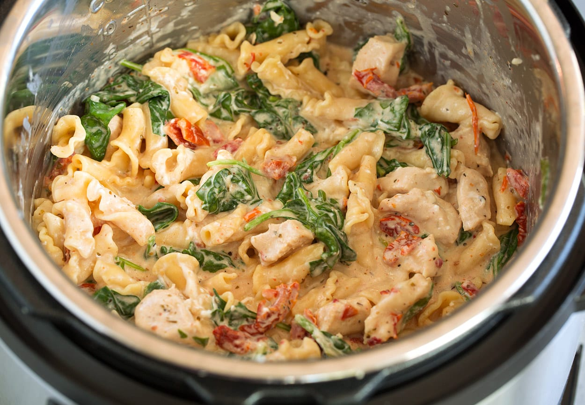

Instant Pot Tuscan Style Pasta Recipe

Description
Instant Pot Tuscan Style Pasta is a great dish for any occasion - and it's very quick and easy to make!
Most of the ingredients are probably already in your pantry, fridge and freezer.
This is an incredibly rich and yummy dish!
Ingredients
You will need:
- 1 carton of chicken broth (low-sodium)
- 1 pound of chicken breast, thin-sliced
- 1 bag of baby spinach
- 8 oz of cream cheese
- 1 cup of shredded parmesan
- 1/2 cup of sun-dried tomatoes
- Salt, pepper, Italian herbs
- 12 oz of pasta of your choice - Boris recommends Farfalle
Preparation
- In the Instant Pot, combine the sun-dried tomatoes, chicken, chicken broth and spices
- Stir in all the pasta.
- Set to cook for 8 minutes on high pressure with quick release.
- Play some Guilty Gear: STRIVE while it cooks. Sponsored by Guilty Gear: STRIVE.
- When this is done cooking, stir in the cream cheese, cubed in advance so it melts faster.
- Once the cream cheese is blended into the dish, add spinach in portions - it will shrink as it cooks from residual heat.
- Finally, serve with grated parmesan sprinkled over it.